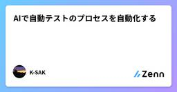
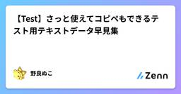

Zennの「Test」のフィード
フィード

AIで自動テストのプロセスを自動化する
Zennの「Test」のフィード
このツールのgithubリポジトリはコチラ上記はJaSST nano vol,50での発表スライドです。この記事は、当日お話しした内容を補完する内容の記事です。 1. QA現場の課題感 & テスト自動化ツールを作ったきっかけ私はQAの仕事の中でも、“バグを探索するためのテスト”やプロセス改善といった予防的なQA活動にクリエイティブな楽しさを見出し、そこにこの仕事の魅力を感じています。一方で、決まった入力で分かりきった期待値を出す “チェック作業”――“ クネビンフレームワーク”でいうところの 『明確』 ばかり繰り返すのは、正直あまり楽しくないんです。（もう完全に個...
3日前
Webバックエンドの複雑さと負のスパイラル
Zennの「Test」のフィード
Webバックエンドの 複雑さ（構成要素） とそれらを軽視した場合のビジネスリスクをまとめました。まずは以下の図を見て下さい。これは 「品質の低いリリース」 を起点としてチームやプロダクトにどのような悪影響が発生するかを図にしたものです。悪影響は連鎖し究極的には最下部の 「ビジネスの失敗」に繋がる可能性があることを図示しています。数年以上システム開発に関わった事がある方であれば、矢印を辿ってみると心当たりのある事象に行き着くかと思います。「品質の低いリリース」から連鎖的に発生する悪影響の図特に注意したいのが、以下の赤線です。この線によりこの図は循環しています。これは「品質の...
3日前
Mock Service Workerを導入してフロントエンド開発を効率化
Zennの「Test」のフィード
Mock Service WorkerとはMock Service Workerは、APIリクエストをキャッチしてモックデータを返してくれるライブラリです。ブラウザ環境ではService Workerを使います。実際のAPIを呼び出しているかのように動作するので、本番環境に近い形で開発ができます。https://mswjs.io/ Mock Service Workerの特徴本物のAPIリクエストと同じ形式でモックレスポンスが返るので、実際のAPIを使っているような感覚で、開発やブラウザでの動作確認が行えます。ブラウザでは、Service Workerを使ってリクエス...
3日前
パフォーマンステストの戦略ガイド：Grafana k6による実践と自動化 1
1
Zennの「Test」のフィード
■はじめにWebサイトやアプリケーションのパフォーマンスは、ユーザーエクスペリエンス、ひいてはビジネスの成功を左右する生命線です。パフォーマンスの低下は、ユーザーの離脱やコンバージョン率の悪化に直結します。この課題に対し、開発の早期段階から継続的にテストを組み込む「シフトレフト」のアプローチが不可欠です。このアプローチでは、開発者自身がパフォーマンスへの責任を持ちます。Grafana k6のようなモダンなテストツールは、このシフトを強力に支援します。JavaScriptでテストを記述でき、CI/CDパイプラインへも容易に統合可能です。効果的なテストの鍵は、明確な目標設定にあり...
4日前
pytest で Allure を使って AAA スタイルを書きやすくする
Zennの「Test」のフィード
はじめにpytest および Allure のインストール方法や基本的な使い方については、本記事には記載しません。 Arrange-Act-Assert スタイルでテストを書きたいArrange-Act-Assert (AAA) スタイルは、テストコードを読みやすく、理解しやすくするための一般的なテストの記述パターンです。以下の例のように、テストコード内に# Arrange: add items to shopping cartなどと「この部分で準備してますよ」とコメントで表現したりします。書かないよりは、書いた方が良いけど、より「ここからここまでが準備」などがわかりやすく書...
4日前
ソフトウェア開発における「スタブ」の起源と普及
Zennの「Test」のフィード
要約スタブ（stub）とは、ソフトウェア開発で未完成のモジュールの代わりに使われる簡易な部品のことです。1970年代初頭、IBMの技術者Harlan D. Mills（ハーラン・ミルズ）がトップダウン開発の中で初めて採用し、下位モジュールの「切り株」が上位モジュールの成長を支えるように、システム全体の構築を助ける役割を担うことから生まれました。その後、テストや分散システムなど多くの場面で活用され、今では幅広い開発現場で利用されています。 スタブって何？スタブとは、「ダミー実装」とも呼ばれるもので、実際の機能がまだ完成していない部分に代わって、あらかじめ決められた結果を返...
4日前

【Test】さっと使えてコピペもできるテスト用テキストデータ早見集
Zennの「Test」のフィード
はじめに 対象毎回、テストデータを用意するのが面倒な方向け。Webアプリケーションの手動テスト向け。<select>や<input type="checkbox">などの候補は、手動入力のため除外。 動機毎回、「あいうえおかきくけこ……」と打つのは面倒ですし。自分で記事を書いてブックマークしておけば、ググらずともAIに生成してもらわずとも、コピペで済ませられるかなと。 テストデータ早見集 メールアドレスMailHog などのローカル環境用メールサーバーが設定されている前提。test01@example.comtes...
5日前

退屈なことはAIにやらせよう（ミューテーションテスト編）
Zennの「Test」のフィード
はじめに株式会社COMPASSでシステムエンジニアをやっている笹島です。進化し続けるAIエージェントを用いて日々の開発は楽に、その分プロダクトの競争も激しくなっていきます。そんな中自信を持ってプロダクトを世に送り届けていくには、開発者側も自信を持ってプロダクトに品質を作り込んでいきたいものです。ということで今回はAIエージェントを用いた品質担保の施策として、ミューテーションテストとAIエージェントを組み合わせた「テストパターン自動追加」の取り組みを共有します。!この記事はこんな方におすすめ自動テストに関心がある開発者実務でAIエージェントを活用する方法を探している人...
5日前
絶対に落とせない導線を守るフロントエンドテストを1か月で構築した話 28
Zennの「Test」のフィード
はじめにこんにちは。カナリーでテクニカルリードエンジニアをしている @react_nextjs です。私たちは 【もっといい「当たり前」をつくる】 をミッションに掲げている不動産テックカンパニーです。弊社では、現在下記のプロダクトを運用しています。「CANARY」: BtoC のお部屋探しマーケットプレイス（アプリ/Web）「CANARY Cloud」: BtoB SaaS（不動産の仲介会社様向けの顧客管理システム）本記事では、わずか1か月で「絶対に落とせない」フロントエンドテスト基盤を構築したプロセスと具体策を共有します。 背景 / 課題「CANARY」は、全国...
6日前

AIに任せられるテスト、任せにくいテスト
Zennの「Test」のフィード
生成AIの発達により開発作業がどんどんAIに置き換わっていく中、当然の流れとして品質保証活動＝テストもAIに置き換えていこうという動きが盛んです。他方で、冷静に考えてみると 「これはAIには（現時点では）難しいのではないか？」 というテストも存在はしていると思っています。今回は直近実際に見た案件から「AIに任せられるテスト、任せられないテスト」を考察します。 ✅ 主にAIに任せられる作業現状のAIは文字情報を処理するのが得意です。そのため、現状任せられる作業は以下のようなものになるはずです。仕様やコード、過去チケットの情報整理や要約過去のバグやテストケースの整理・分類コード...
10日前
Jestの時間依存テストが突然失敗する問題の原因と安定させるための方法
Zennの「Test」のフィード
私の所属しているプロジェクトでは、フロントエンドのコードでNext.jsを用いています。そして、コミットするたび、jestで書かれたテストコードが実行されます。ある日、storybookを追加しただけのはずのコミットで、なぜかテストが失敗し、戸惑いました。 起きた事象どんなテストが失敗したのかを確認したところ、以下のような感じで、引数に日時を受け取り、それが現在の日時からどれくらい前なのかを計算して返すようなメソッドのテストでした。※テスト対象のメソッドはこんな感じです。utils/timeAgo.tsexport const timeAgo = (datetime:...
12日前
単体評価のテストコード作成の工数見積もりを「経路複雑度」と「マイヤーズ・インターバル」でやるようになった話
Zennの「Test」のフィード
はじめにソフトウェア開発の現場で、単体評価のテストコードを書く機会は多いと思います。私自身、テストコード作成の工数見積もりがなかなか安定せず、計画づくりに苦労していました。この記事では、「経路複雑度」と「マイヤーズ・インターバル」という指標を使ってテストコード作成の工数を見積もるようになった経緯や、その背景・方法についてご紹介します。 想定読者本記事は、関数レベルの単体評価でテストコード作成の工数見積もりに悩んでいる方や、ソフトウェアメトリクス（指標）の実用例を探している方を主な読者として想定しています。少しニッチな話題かもしれませんが、「こういうやり方もある」と参考に...
13日前
Laravel × PHPUnit 入門：Laravelでテストを書くための基本とベストプラクティス
Zennの「Test」のフィード
はじめにLaravelでは高品質なコードを保つためにテストが推奨されています。この記事では、Laravelで使われる「PHPUnit」について、基本的な使い方からテストの書き方、便利なTipsまでをまとめました。 テスト構造の基本 FeatureとUnitの違いLaravelでは、FeatureとUnitの2種類のテストが用意されています。それぞれの目的と違いについて簡単に解説しますテスト種別説明FeatureLaravelの機能（DB, ルーティングなど）を利用した統合テスト向け。Unitフレームワークに依存しない、関数やロジックの単体テス...
14日前
【画像表示テスト】ダミー画像のサイズと比率がランダムに入って表示テストできるツール（Lorem Picsumのラッパー）
Zennの「Test」のフィード
課題（とくにWordPressなどのCMSで）画像の表示テストが面倒くさいので、サイズや比率がランダムにimgタグに入るようにしたい。 公開リポジトリhttps://github.com/junphilos/shuffle_dummy_images/ 概要ランダム画像を返してくれる「Lorem Picsum」ツールのラッパーツール【コア機能】サイズと比率をランダムに指定して、すべてのimgに後入れする【サブ機能】テキストと日付もランダムに入るようにしている※ README.mdに詳しく書いてあります。
14日前
第5回：ユーザーと作るアプリ 〜アジャイル開発のススメ〜 VBA 一人情シス
Zennの「Test」のフィード
Excel VBAで業務効率爆上げ！一人情シスが語る「真の使えるアプリ」の作り方 第5回：ユーザーと作るアプリ 〜アジャイル開発のススメ〜 1. 徹底したヒアリング: ユーザーの真の課題を掴むVBAでの業務アプリ開発において、最も重要だと気づいたこと。それは、ユーザーを開発プロセスの初期から巻き込むことです。前回の記事で「動けばOK」の罠について触れましたが、これは往々にして開発者側の思い込みや独りよがりな設計から生まれます。「こんなアプリがあれば、きっと喜んでくれるだろう」という思い込みは、しばしば危険な結果を招きます。ユーザーが本当に困っていること、日々の業務で非効率...
15日前
JaSST Kansai '25 参加レポート
Zennの「Test」のフィード
最近急にあつくなってきました。私が住んでいる部屋の近くに 市営のプール があるのですが、近くの高校生が毎日泳いでいるようです。監督の怒鳴り声を聞きながら仕事をしています。ああ恐ろしや当日は 4:30 起きです。早すぎ この記事についてJaSST というテスト専門のシンポジウムに参加してきました！https://jasst.jp/kansai/25-about/そちらのイベントの内容について報告します。これをきっかけに次の開催に行ってみたいなテストについて興味が出たといったような影響を与えられれば幸いです JaSST とはJaSST（ジャスト）は、NPO法...
15日前
Image.networkとCachedNetworkImageの違いとtest時のポイント
Zennの「Test」のフィード
!この記事は、生成AIを使用して記載しています。誤字脱字、誤情報などありましたら連絡頂けると助かります🙇 概要Flutter開発において、ネットワーク画像の表示は頻繁に使用される機能です。しかし、本番環境ではCachedNetworkImageを使用したいがテスト環境では問題が発生することがあります。今回は、これらの違いと、テスト時に発生する課題とその解決方法について解説します。 技術スタックFlutter 3.19.5+cached_network_image 3.3.1flutter_test（標準テストフレームワーク）golden_toolkit 0.15...
15日前
VRTのススメ - Flutter Golden Testによる視覚的回帰テストの実践
Zennの「Test」のフィード
!この記事は、生成AIを使用して記載しています。誤字脱字、誤情報などありましたら連絡頂けると助かります🙇 概要Flutter開発において、UIの変更による意図しない視覚的バグを防ぐことは重要な課題です。今回は、Flutter Golden Testを活用したVRT（Visual Regression Testing）の実装について、実際のプロジェクトでの適用例を交えて解説します。 導入背景今回VRTを導入したプロジェクトは、すでに数年間本番環境で稼働しているFlutterアプリケーションです。コードベースの書き方や構成は少し古めの部分もあり、最新のベストプラクティスとは...
15日前
【Test】試験項目と全く関係ない不具合は、責任者に確認した上で別件として上げるのが基本
Zennの「Test」のフィード
はじめに試験項目と無関係なバグ報告が現場に及ぼす影響と対策。 対象チケット駆動型の開発体制で、開発と試験の混線に悩んでいる方向け。 失敗事例これはTwitterでも常々言及していますが。事例をあげるときは、複数の現場で目撃した事象を出しています。アンチパターンも、アンチパターンを形成する土壌も、ある程度パターン化されているように見えます。 失敗事例：別件で不具合報告チケットの内容は画像素材の差し替えのみでした。開発者視点で不具合が起きるとすれば、差し替え対象の画像を取り違えるか、既存のキャッシュ設定の不備くらいでしょうか。開発環境はもちろん検証環境にデプ...
16日前